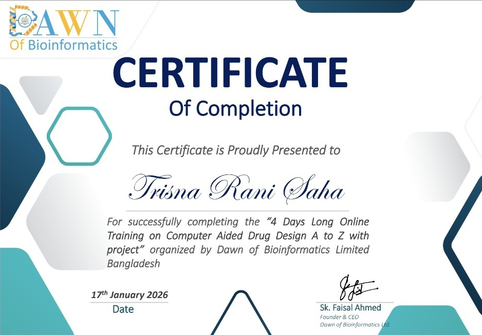
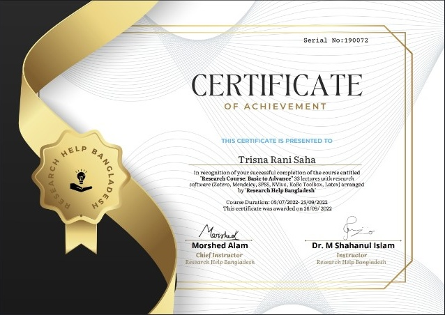
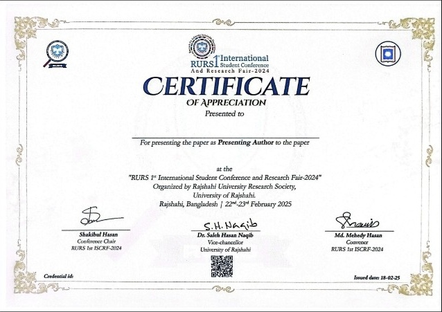
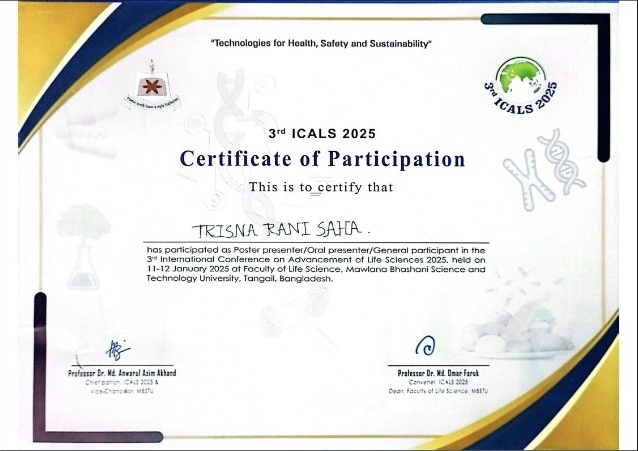
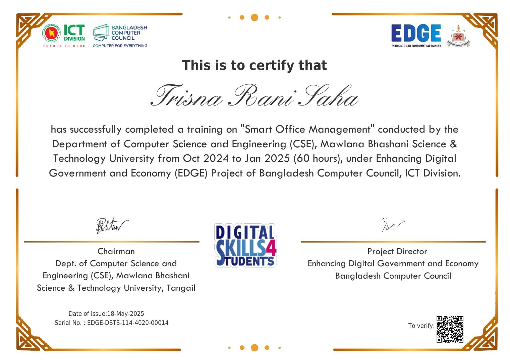
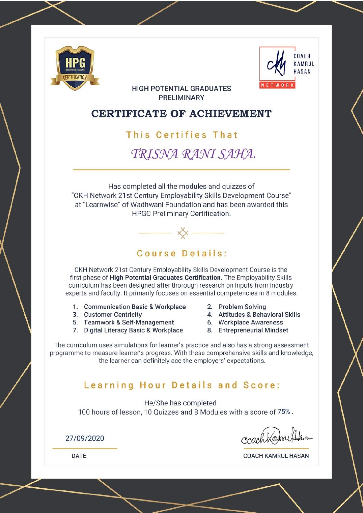
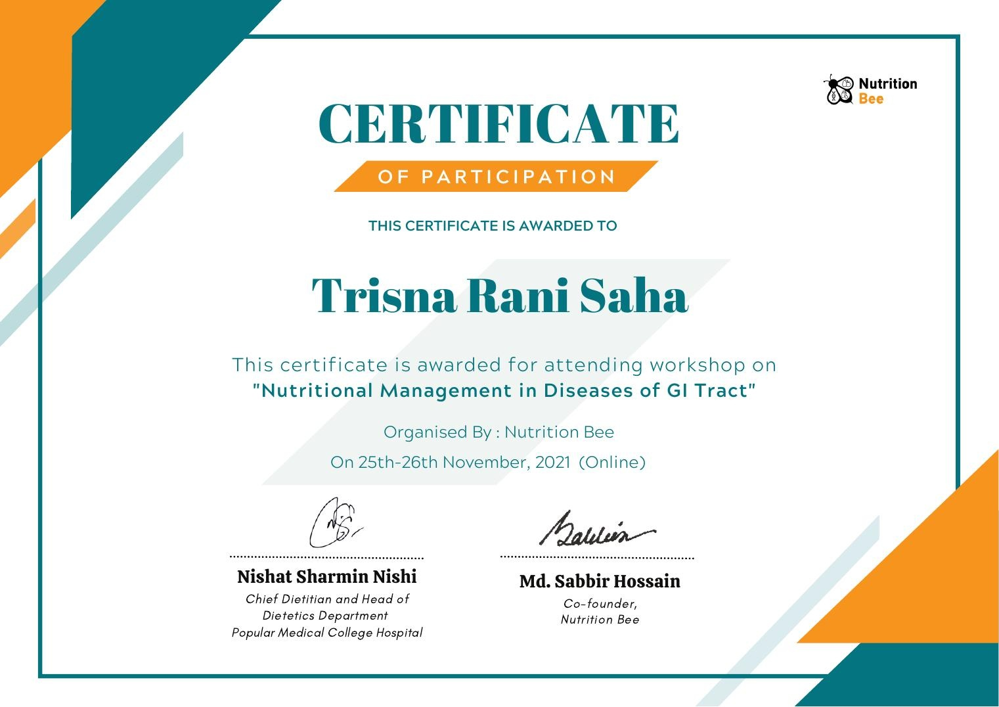
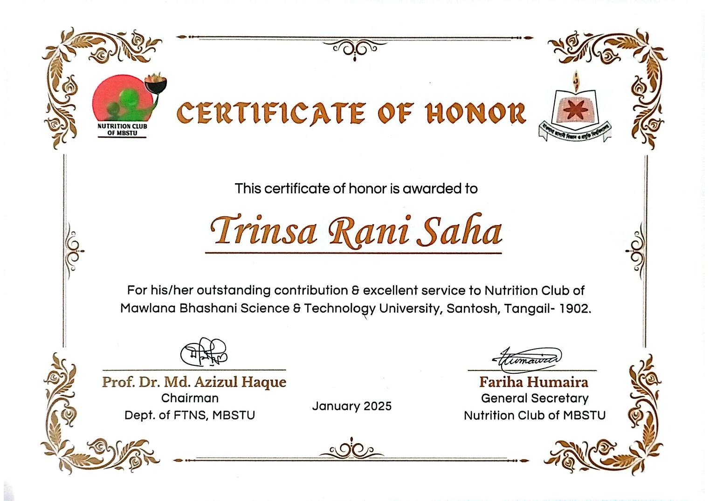
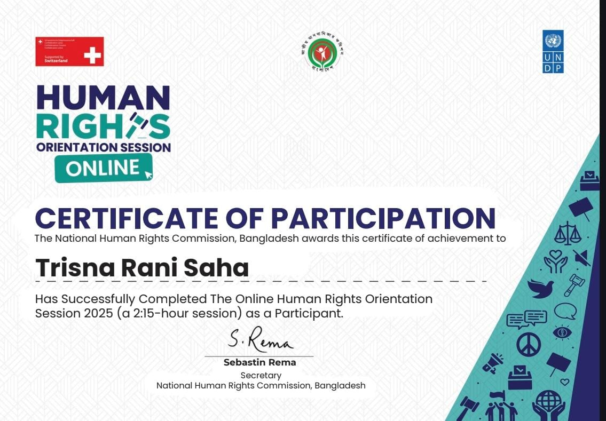
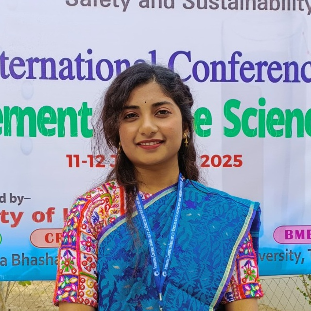

NST Fellowship
2025–26 · Ministry of Science & Technology
Aspiring PHD Scholar
Trisna Rani Saha
Food Technology & Nutritional Science
Passionate about nutrition, food science, health and evidence-based research. Interested in dietary interventions, functional foods, disease prevention and computational approaches that can contribute to better public health.
sahatrisnarani@gmail.com
Pabna, Bangladesh

Researcher
Food · Nutrition · Health
Graduate Research
Food Technology & Nutritional Science
Conference Presenter
RURS ISCRF-2024 & 3rd ICALS 2025
Research Interests
Nutrition · Food Science · Natural Products
ABOUT ME
A passionate researcher in Food & Nutrition.
I am a National Science and Technology (NST) Fellow and Master of Science graduate in Food Technology and Nutritional Science (CGPA: 3.85/4.00) specializing in bio-computational food chemistry, preventive nutrition, and functional product formulation. My research integrates in silico screening, molecular docking, computer-aided drug design (CADD), and SPSS quantitative data analysis to evaluate targeted dietary interventions for chronic disease prevention and public health promotion. With practical experience in drug toxicity analysis, experimental research design, and agricultural waste valorization, I focus on bridging computational nutrition science with evidencebased health solutions. My academic objective is to leverage rigorous analytical methodology to advance translational research in disease prevention and population wellness.
Explore Research →
3.85
M.S. CGPA
out of 4.00
out of 4.00
3.51
B.Sc. CGPA
out of 4.00
out of 4.00
2025–26
NST
Fellowship
Fellowship
2+
Conference
Presentations
Presentations
10+
Training &
Credentials
Credentials
EDUCATION
Academic journey
Food Technology & Nutritional Science2023 — 2024
Master of Science (M.S.)
Food Technology and Nutritional Science
Mawlana Bhashani Science and Technology University (MBSTU) Thesis: In Silico Screening of Ficus carica for Antidiabetic Potential and Development of Fig-Based Chewable Tablets.
3.85 / 4.00
CGPA
2019 — 2022
Bachelor of Science (B.Sc.)
Food Technology and Nutritional Science
Mawlana Bhashani Science and Technology University (MBSTU) Research Project: Valorization of Tomato and Potato Peel Wastes to Develop Functional Food Products
3.51 / 4.00
CGPA
2015 — 2017
Higher Secondary Certificate (HSC)
Govt. Edward College, Pabna
Science
5.00 / 5.00
GPA
2015
Secondary School Certificate (SSC)
Pabna Govt. Girl's High School, Pabna
Science
5.00 / 5.00
GPA
RESEARCH & PROJECTS
Research interests & selected work
Food · Health · Computational approachesIn Silico Screening of Ficus carica for Antidiabetic Potential and Development of Fig-Based Chewable Tablets.
A research direction focused on fig-based natural chewable tablets and the potential role of natural products in nutrition and health research.
Valorization of Tomato & Potato Peel Wastes
Explored value addition of tomato and potato peel wastes toward functional food products, including antioxidant and dietary-fiber potential and sensory evaluation.
RESEARCH INTERESTS
Areas of scientific interest
Nutrition
Food Science
Functional Foods
Bioactive Compounds
In-vitro Research
In-silico Research
Molecular Docking
Enzyme Inhibition
CERTIFICATES & ACHIEVEMENTS
Credentials & academic recognition
Click a certificate to view the full image
17 January 2026
Computer Aided Drug Design A to Z
Dawn of Bioinformatics Limited · 4 Days Long Online Training with Project

26 September 2022
Research Course: Basic to Advance
Research Help Bangladesh · Research methods and research software

22–23 February 2025
RURS International Student Conference & Research Fair
Presenting Author · University of Rajshahi

11–12 January 2025
3rd International Conference on Advancement of Life Sciences
Presenter / Participant · MBSTU

18 May 2025
Smart Office Management
EDGE Project · Bangladesh Computer Council · ICT Division

27 September 2020
21st Century Employability Skills
CKH Network · Wadhwani Foundation, Bangladesh

25–26 November 2021
Nutritional Management in Diseases of GI Tract
Nutrition Bee · Online Workshop

January 2025
Nutrition Club · MBSTU
Certificate of Honor · General Member

January 2025
Human Rights Workshop
Certificate of Participation · Organizing Committee
AWARD & RECOGNITION
National Science and Technology Fellowship 2025–26
Ministry of Science and Technology, Bangladesh · Research Fellow
CONFERENCE & ACADEMIC GALLERY
Academic moments beyond the certificate.
Conferences, research presentations, laboratory activities and academic engagement are important parts of a continuing research journey.

CONFERENCE PARTICIPATION
3rd International Conference on Advancement of Life Sciences 2025
Academic participation and research presentation at MBSTU.

CONFERENCE PARTICIPATION
RURS 1st International Student Conference and Research Fair-2024
Academic participation and research presentation at Rajshahi University Research Society.
01
Research Presentation
Presenting research work and communicating scientific ideas to an academic audience.
02
Research & Learning
Combining food science, nutrition, data analysis and computational research tools.
03
Academic Engagement
Workshops, training programs, research fairs and professional academic activities.
SKILLS & RESEARCH TOOLKIT
Tools I work with
Research · Analysis · DocumentationOffice & Documentation
Microsoft Word · PowerPoint · Excel · LaTeX
Research & Analysis
Research Design · SPSS Statistics · KoboToolbox
Literature Management
Zotero · Mendeley · Academic literature organization
Computational Research
Molecular Docking · Computer-Aided Drug Design · Drug Toxicity Analysis
GET IN TOUCH
Aspiring PhD Scholar, Open to research collaboration and academic opportunities.
I am interested in bridging computational nutrition science with technology based food formulation.